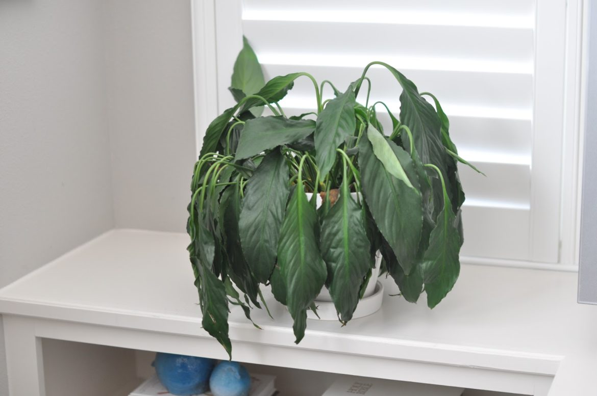
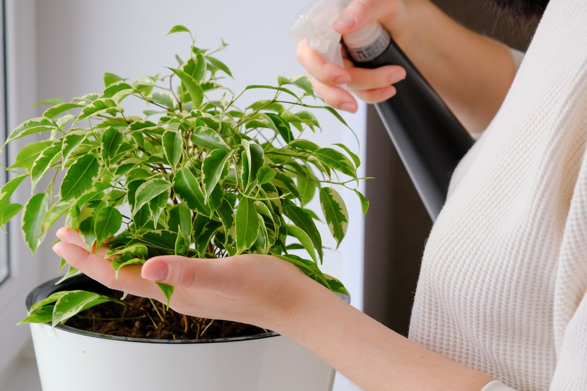
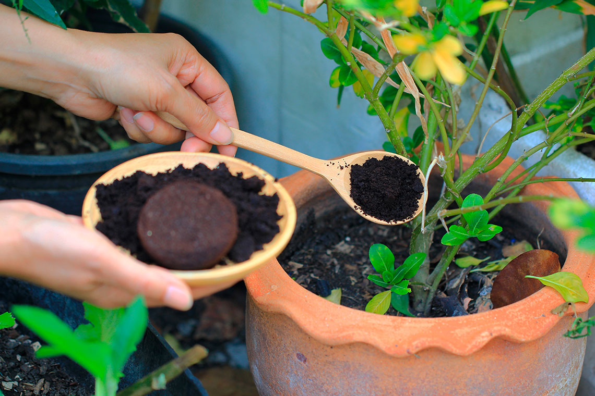
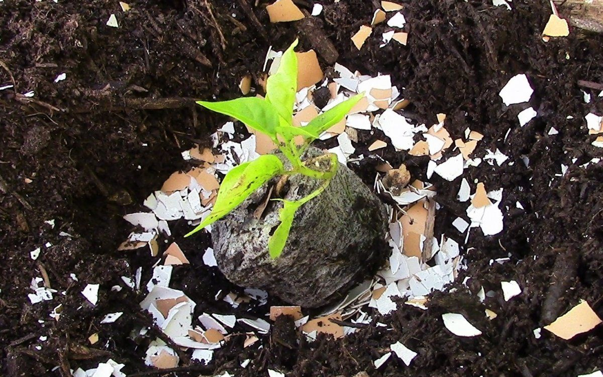

Домашние растения
Удобрения для комнатных растений и цветов
В магазине сейчас можно купить любое комплексное удобрение для комнатных растений и цветов. Инструкции у них четкие и подробные. Стоит ли пользовать домашними отходами вместо покупных удобрений?
Когда удобрение жизненно необходимо комнатным цветам

- Когда рост цветов резко остановился, они не выбрасываю новых листьев и почек.
- Когда растение начало неожиданно сбрасывать старые листья, а новые не растут.
- Когда вы забыли, как выглядят цветы ваших любимых растений.
- Когда видите, что листья потускнели, стебли стали более тонкими, не упругими, в общем, у растения – крайне болезненный вид.
Как удобрять домашние растения
 Каким бы ни было ваше удобрение – сухим или жидким – вносить его нужно обязательно в увлажненную землю, иначе можно обжечь корни. И кроме того – обязательно соблюдайте дозировку удобрений. Принцип «подкормлю побольше, будет расти лучше» не сработает. Если растение слишком перекормлено, оно может остановиться в развитии и даже погибнуть. Слишком много хорошо – это тоже плохо.
Опасные мифы о домашних удобрениях
Прежде всего нужно постараться избежать появления вредителей в почве и на самих комнатных растениях. Поэтому для борьбы с комнатными вредителями обязательно используйте своевременные меры профилактики:
-

Кофейная гуща полезна
Многие добавляют в цветочные горшки спитые заварку и кофейную гущу, мол, в них ведь столько пользы, да и земля будет более рыхлой. И если чайная заварка, действительно, хотя бы делает грунт более рыхлым, то вот кофейная гуща закисляет почву, что может стать губительным для цветов, особенно цветущих.
Яичная скорлупа наполнит землю кальцием
Во-первых, комнатные цветы в кальции фактически не нуждаются. Во-вторых, скорлупу лучше всего использовать в качестве дренажа. Если раздавить помельче, то в качестве разрыхлителя для земли. В этом случае польза, действительно, есть.
А что действительно нужно растениям?
Прежде всего нужно постараться избежать появления вредителей в почве и на самих комнатных растениях. Поэтому для борьбы с комнатными вредителями обязательно используйте своевременные меры профилактики:
Сахар
Глюкоза, которую обожают цветущие растения. Если время от времени будете высыпать полчайной ложечки сахара под корни и сразу поливать водой, растения отблагодарят долгим и пышным цветением.
Измельченная банановая кожура
Хороший источник калия. Но требует серьезной подготовки: хорошенько просушите кожуру в течение недели, тщательно измельчите в блендере. И уже этот порошок смешивайте с землей в горшках. Особенно хорошо это делать во время пересадки.
Есть и такой совет: настоять свежую кожуру в воде до появления пены, потом процедить и этим «бульоном» поливать растения раз в две недели.Зола от дров
Некоторые используют сигаретный пепел, но в нем слишком много канцерогенов, особенно если сигареты с ароматизаторами. Лучше всего подсыпать в горшки золу из-под обычных дров, привезенную с дачи. Она наполняет землю азотом, который особенно необходим цветам в период буйного роста и цветения. Кроме того, зола отлично борется с вредными мушками.
Можно сделать жидкое зольное удобрение: 2 столовой ложки золы на литр теплой воды. Настаивать два дня, поливать раз в две недели.Крапива
Свежая крапива поможет цветам не болеть и быть крепкими. Отвар крапивы наполняет землю минералами и азотом. Это так называемое зеленое удобрение, которое полезно и на даче, и дома. Достаточно замочить побеги крапивы на сутки в теплой воде, процедить, поливать раз в две недели.
Водка
Если растения захирели и потеряли радость жизни, просто «напоите» их – на 3 литра воды разведите 100 граммов водки и полейте домашние цветы. Буквально через два-три дня вы заметите, как ваши питомцы приободрятся.
Вода из террариума и аквариума
Если растения любят жидкие удобрения из навоза животных и птиц, то почему бы им не любить аквариумную воду, где также растворены различные питательные вещества? Конечно, не стоит злоупотреблять и совсем переводить растения только на аквариумные воду, но раз в две недели, в качестве подкормки, очень даже подойдет.
Самое важное
Но чем бы вы не подкармливали своих домашних любимцев, если им недостаточно света и нет правильной температуры и влажности, которая необходима этому типу растений, они все равно не будут хорошо расти. Поэтому для начала организуйте им правильное место и освещение – обязательно купите досвечивающую лампу, если окна вашей квартиры выходят на север. Не забывайте опрыскивать их каждый день. А зимой – укрывать батареи влажным полотенцем, чтобы не пересушивать воздух. И тогда цветы отблагодарят вас долгой жизнью, здоровыми листьями и красивым цветением.